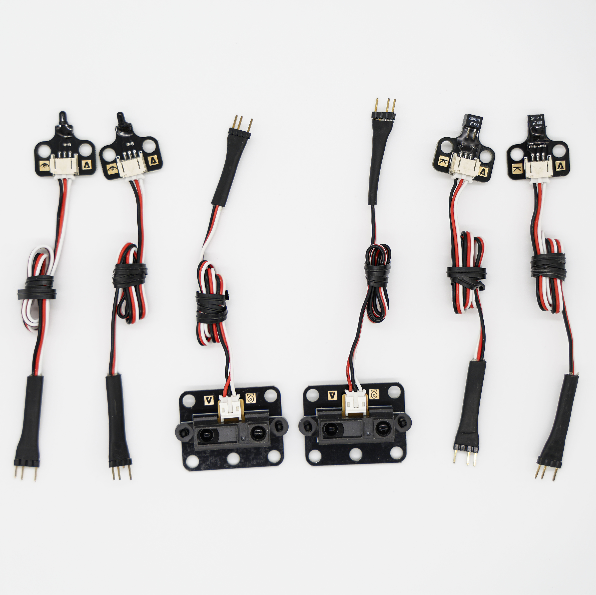

Unit 2 · Big Idea 4
Information Must Be Interpreted
Student Lab · Reading the Line
Student PIN:
Overview
Your touch sensor gave a clean yes-or-no. Today's sensor is different. A Tophat sensor shines infrared light at the floor and measures how much bounces back — white reflects a lot, black line reflects little. But it doesn't return 0 or 1. It returns a number from a big range, and that number is noisy — it jumps around even when nothing moves. Before this sensor is useful, you have to interpret it: figure out what counts as "black" and what counts as "white." That work is most of this lab, and almost all of it happens before you write a single line of code.
Core Insight
Raw sensor data is messy and meaningless on its own. The intelligence is in turning a jumpy number into a clear decision: "this means line, that means floor."
By the end of this activity you will be able to:
- Read an analog sensor with
analog(0)and explain why its values are noisy. - Calibrate the sensor: measure black and white, and find the best mounting height.
- Calculate a threshold (midpoint) that separates "black" from "white."
- Use
if/elseon the live reading to steer a robot along a line.
A heads-up
This is the biggest lab yet. You'll do a lot of measuring and thinking before any driving. Take your time on the data — the better your calibration, the better your robot follows the line.
Phase 1 — Mount the Sensor & Find Its Values

Mount It
Setup
Mount the Tophat sensor on the front of your robot, facing down at the floor, about 1/4 inch off the surface.
Plug it into analog port 0. In code, analog(0) reads this sensor.
Find It on the Controller
Hold the sensor still over white and watch the port-0 value for a few seconds. What was the lowest number you saw, and the highest? How much did it bounce?
Why is a sensor that bounces around a problem if you wanted to check for one exact value like analog(0) == 2000?
Phase 2 — Find the Best Height
The sensor's height off the floor changes how well it can tell black from white. Too close or too far, and black and white start to look the same. You want the height where the difference between a black reading and a white reading is as big as possible — a big gap is easy to split; a small gap is not.
Step 1 — Read at Different Heights Over WHITE
Hold the sensor at each height over a plain white area. Record the value you see (pick the middle of the bounce).
| Height off surface | Sensor value (analog 0) |
|---|---|
1/8 inch | |
1/4 inch | |
1/2 inch | |
3/4 inch |
Step 2 — Read at Different Heights Over BLACK
Now the same heights, over black line.
| Height off surface | Sensor value (analog 0) |
|---|---|
1/8 inch | |
1/4 inch | |
1/2 inch | |
3/4 inch |
Step 3 — Find the Biggest Difference
For each height, subtract: black value − white value. The bigger the difference, the easier it is to tell them apart.
| Height | Difference (black − white) | Biggest gap? (✓) |
|---|---|---|
1/8 inch | ||
1/4 inch | ||
1/2 inch | ||
3/4 inch |
Which height gave the biggest difference between black and white? Why is a bigger gap better for telling the line from the floor?
Phase 3 — Calibrate & Find the Midpoint
Now mount the sensor firmly at your best height (around 1/4 inch). With it mounted exactly where it will drive, take your real readings — these are the numbers your code will trust.
Step 1 — Mounted Readings
| Sensor over... | Mounted value (analog 0) |
|---|---|
WHITE floor | |
Black line |
Step 2 — Calculate the Midpoint
The midpoint is the value exactly halfway between black and white. It's your threshold: above it means black, below it means white. Add your two readings and divide by 2.
Midpoint = ( black + white ) ÷ 2
This number is the heart of the lab
Your midpoint is the line between "I see black" and "I see white." Write it down — you'll type it into your code as MIDPOINT. Every robot's number is a little different, because every sensor is a little different.
Write your final midpoint value here, and explain in one sentence what it means.
Phase 4 — Concept: Threshold & Steering
Your touch sensor was digital — only 0 or 1. The Tophat is analog — it returns a number across a wide range. That's more information, but it's also messier: it bounces, and there's no single "line" value. You have to decide where the line is.
A threshold is a cutoff. Once you have your midpoint, every reading becomes a yes-or-no again:
This is the same if/else you learned in Unit 1 — but now the condition reads a live sensor, not a number you typed. The robot is interpreting the real world.
With one sensor, the trick is to ride the edge of the line — half on black, half on white. Every time the robot drifts, the reading tells it which way it slipped, and it steers back:
- Reading above midpoint → drifted onto black → steer one way
- Reading below midpoint → drifted onto white → steer the other way
Constantly correcting back and forth, the robot wiggles its way right along the edge of the line.
Phase 5 — Build the line_follow Function
⚠ Test in your hands first
Hold the robot up and pass the line under the sensor by hand. Watch the wheels change speed as you move from white to black. Only put it on the board once the steering reacts the right way.
You'll reuse the encoder skeleton from Tick_Drive — clear the counter, loop to a tick target, brake at the end — but inside the loop you'll put the if/else that steers. Type your own MIDPOINT from Phase 3 at the top. Prototype above main(), definition below.
If your robot steers the WRONG way — flip the branches
Every robot is wired a little differently. If your robot veers off the line instead of hugging it, swap the two motor blocks: put the white block's speeds in the black branch and the black block's speeds in the white branch. The logic is right; it just needs to match how your motors are wired.
Tuning Log
Run it on the line. Adjust your speeds (the 50 and 20) and re-test. Record what you tried.
| Try | Speeds you used (fast / slow) | How well did it follow the line? |
|---|
Checklist
- You typed your own measured
MIDPOINTat the top - The
iftestsanalog(0) > MIDPOINT - The black branch and white branch set the two motors to different speeds
- The loop still uses
cmpc(0)andgmpc(0) < ticksto control distance - The robot brakes at the end
Phase 6 — Connect: The AI Literacy Bridge
Big Idea — AI Literacy Thread
Intelligent systems transform raw sensor data into meaningful information.
Your sensor handed you a noisy, jumpy number. On its own, it meant nothing. You turned it into meaning by calibrating and setting a threshold — and only then could the robot act on it. Every intelligent system does this. A voice assistant gets a messy sound wave and has to decide "was that a word?" A medical device reads a noisy heartbeat signal and decides "is that a real beat?" The raw data is always messy; the intelligence is in interpreting it well. A bad threshold makes a bad decision, no matter how good everything else is.
Read each scenario. Think it through, then write your answer.
Your midpoint was different from your neighbor's, even with the same kind of sensor. Why must each robot be calibrated for itself instead of using one number for everyone?
Imagine you set your threshold too low, so the robot calls almost everything "black." What would the robot do wrong? Now too high — what goes wrong then?
A raw sensor value is just a noisy number until it's interpreted. Name another machine that has to turn messy raw data into a clear decision, and say what its "threshold" decides.
Phase 7 — Individual Reflection
Complete this section on your own.
1. What is the difference between a digital sensor (the touch button) and an analog sensor (the Tophat)?
2. What is a threshold, and how did you calculate yours? Why is the midpoint a good choice?
3. In Unit 1, your if/else tested a number you typed. Today it tested a live sensor. Why is testing a real sensor more powerful?
4. Complete this in 2–3 sentences: "Intelligent systems transform raw sensor data into meaningful information. This means that before a robot can trust a sensor, someone must..."
Extension Challenges
Finished early? Try one or more of these.
Extension A — Smoother Steering
- Your robot probably wiggles. Try making the fast/slow speeds closer together (like 45 and 30). Does it wobble less? What's the trade-off?
Extension B — Re-calibrate Under Different Light
- Move to a brighter or darker spot and re-read black and white. Did your midpoint change? What does that tell you about trusting old calibration data?
Extension C — Make is_on_black()
- Write a small helper function (prototype above, definition below) that returns whether the sensor sees black, using your threshold. How could that make
line_followeasier to read?
Extension D — Two Sensors (a peek ahead)
- If you had a Tophat on the left AND the right, how could the robot follow the line more smoothly? Sketch the idea in words. (We'll build toward this.)
When you are finished, press the button to turn in your work and save a copy.
KIPR · Botball Explorer · Unit 2 Big Idea 4 — Student Lab